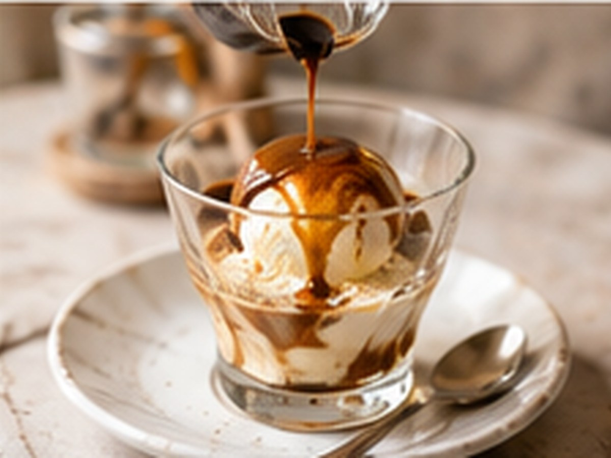

Besondere Espresso-RezepteBesondere Espresso-Rezepte
Affogato
Dessert und Kaffee in einem.
⏱3 Min.
📶Einfach
☕1 Portion
🫘Zutaten
- Vanilleeis1 Kugel
- Espresso1 Shot
📋Zubereitung
- 1Eine Kugel Vanilleeis in eine Schale geben.
- 2Espresso frisch zubereiten.
- 3Espresso direkt über das Eis gießen und sofort servieren.
💡
Kaffee für dieses Rezept entdeckenLeNoKo Shop
→
Kaffee-Tipp
Der kräftige, dunkle Linzer Espresso ist unser Klassiker für Affogato.